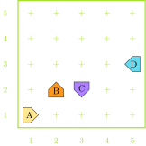
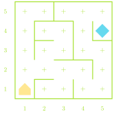
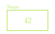

Karel starts in the empty world shown at one of the marked positions
and runs the below code. One of the starting positions will result in an
error before the code finishes. Which one?
for i in range(2):
move()
turn_left()
for i in range(2):
if front_is_blocked():
turn_around()
move()
turn_right()

Algorithms
The process of designing a solution strategy to a problem is called
algorithmic design
An algorithm is just an approach or recipe for a method to
solve a particular problem
Most commonly language agnostic
Algorithms are not a new concept
Euclid’s algorithm to find the greatest common divisor, for
instance
A large part of computer science is focused on the study or analysis
of algorithms
Algorithm ⮕ Code
You need to have an algorithm in place before you
can write the code to tell the computer what you want to do
Imagine an alien asking me how to bake a cake. I need to understand
the steps to baking the cake before I can even worry about the
translation or communication
Programming tools like conditional statements and loops will
frequently play a role in your algorithm, but as general concepts
I can easily describe a loop to you without needing the exact syntax
of Python
The implementation of the algorithm is the act of
translating it into Python (or whatever language you are using)
An Amazing Algorithm
Consider a simple, loop-less, maze that we want to move through
Karel can start anywhere
The end of the maze is a beeper, and can be anywhere
A common algorithm to get through the maze is to essentially always
follow or touch the wall to your right
How could we phrase this in language Karel would understand?
Take 5 minutes with a neighbor to write out how you could
implement the above algorithm in a way Karel could
understand

Data Types
Generally, the data processed by computers can take on many
forms
A data type defines the common characteristics of some data
values that have a certain form or purpose.
Ex: a whole number or integer has certain characteristics common to
all integers
A data type has a domain, which is the set of all potential
values that would belong to that type.
Ex: 0, 1, 2, 3, 4, 5, 6, 7, …
A data type has a set of operations that define how those
values can be manipulated
Ex: You can add two whole numbers (5 + 2)
Numeric Types
Initially, we’ll focus on the numeric types
Python has 3 data types for representing numbers:
int for integers and whole
numbers
1, 2, 3, 10, 1001010101, -231
float for numbers containing a
decimal point
1.23, 3.14, 10.001, 0.0, -8.23
complex for numbers with an imaginary
component (which we won’t deal with)
Expressions
Python describes computation using arithmetic expressions,
which consist of terms joined by operators
Very similar to how a logical English sentence has nouns connected
by verbs
A term in an expression can be:
an explicit numeric value (called a literal) like 1 or 3.14
a variable name serving as a placeholder to a value (more on those
in a moment!)
a value resulting from the output of a function call (more on those
on Monday!)
another expression enclosed in parentheses
Integer and Float Operations
i + j the sum of
i and j
i - j the difference between
i and j
i * j the product of
i and j
i // j the floor division of
i by j
i / j the division of
i by j†
i % j the remainder when
i is divided by
j
i ** j i
to the power of j‡
-j the negation of
j
– Returns
int if both i
and j are integers,
float otherwise
† – Returns
float always
‡ – Returns
float always if
j is negative
Order of Operations
Basic order of operations applies just like in math!
Operations in parentheses done first
Without parentheses, order of operations proceeds as:
** (exponents, executed right to
left)
-n (negative numbers)
*, /,
//, %, executed
from left to right
+ and -,
executed from left to right
Understanding Check
What is the value of the below expression?
1 * 2 * 3 + (4 + 5) % 6 + (7 * 8) // 9
15
18.22
42
83
Tis Variable
One of the terms that can appear in expressions is what we term a
variable
A variable is a placeholder or nametag for a value that can
be updated as the program progresses
Envision as a named box capable of storing a value

Each variable has the following attributes:
A name: which enables you to tell variables apart
A value: which represents the current contents of the
variable
A variable’s name is fixed, but the value can change whenever you
assign a new value to the variable
Making Assignments
You create a variable by assigning it a value with Python’s
assignment statement, =, a single
equals sign:
variable_name = expression
The variable name must appear on the left of the
= in Python!
Python first computes the value of the right-hand side of the
equals and then assigns to the name on the left
The same variable name can seem to appear on both sides of the
equals!
total = total + value
The total on the right represents some
existing value
The total on the left is the new label
of whatever the right expression evaluates to
Ephemeral Variables
When you assign a new value to a variable, the old value is
lost
>>> A = 10
>>> A
10
>>> B = A + 5
>>> B
15
>>> A = B
>>> A
15
Variables defined in terms of others do not get
automatically updated
Python evaluates expressions from the top down
>>> A = 10
>>> B = A + 2
>>> A = 8
>>> B
12
The Power of Names
Names for variables, functions, and (eventually) classes are called
identifiers
Composed of letters, numbers and underscores, but can not
start with a number
A variety of different conventions to mark word boundaries:
Snake case uses underscores:
this_is_amazing
Camel case uses uppercase:
thisIsAmazing
We will aim to follow the following conventions:
Variable and function names will use snake case
Constant variables will use all uppercase and underscores:
MAX_WIDTH
Class names will use camel case and begin with a capital letter
Capitalization matters! radius and
Radius are different variable names!
Pick meaningful variable names!
Shorthand and Multiple Assignments
It is very common to want to adjust an existing variable
value
balance = balance + deposit
Python gives you a shorter expression to describe this
relationship:
balance += deposit
You can do this with any operation (op) following the general
form:
variable op= expression
You can name multiple variables at once by separating with
commas
A, B, C = 1, 2, 3
All the expressions on the right are computed before being assigned
to the left variables
This can give you a very concise way of swapping variable
values
Understanding Check!
What is the output value of A in the code
below?
>>> A = 10
>>> B = 4
>>> C = A * B
>>> A -= B
>>> A, B, C = C, A, B
>>> A
??